A cron job is a scheduled task that automatically executes a command, script, or program at specified times or intervals on Unix-like operating systems. These tasks can include running shell scripts (.sh), Python scripts (.py), system commands (such as apt update), or HTTP requests using curl. Cron jobs are managed and executed by the cron daemon, which is a time-based job scheduler that runs in the background without requiring manual intervention. Cron jobs are used when we have repetitive and predictable tasks that need to happen on a strict schedule.
Common Use Cases
System Maintenance: Systems often generate temporary files and logs that accumulate over time. Cron jobs can periodically clean up unnecessary files and archive older logs to conserve disk space and keep the system organized.
Database Backups: Some critical databases must be protected against accidental data loss, corruption, or system failures. A cron job can automatically create database snapshots or export database contents during off-peak hours, when user activity is at its lowest. This ensures that recent backups are always available without requiring manual intervention from administrators.
Centralized Email/Ticket Servers: Modern ticketing systems (e.g., Zendesk, Jira) ingest customer emails and web forms, saving them as unclassified requests in a central database. Instead of forcing the ticketing server to handle heavy machine learning calculations in real time, a cron job decouples this process. Periodically, the cron job triggers an orchestration script that performs a three-step loop via the system's APIs:
- Fetch: It queries the ticketing API to retrieve a batch of new, unclassified tickets.
- Analyze: It passes the ticket text to an AI classification model to predict categories like Billing Issue, Technical Bug, or Refund Request.
- Update: It sends the predicted categories back through the API, updating the database automatically so human agents can immediately see routed tickets.

Where Do Cron Jobs Run?
In practice, cron jobs need a server on which they can run. While they can be configured on physical machines or on-premises virtual servers, they are commonly deployed on cloud-based Linux instances. Cloud providers allow organizations to provision virtual machines that continuously execute scheduled tasks.
For example, when using AWS, cron jobs are often configured on Linux-based EC2 instances. Because cron is available on virtually all major Linux distributions, including Amazon Linux, Ubuntu, and Debian, the choice of Amazon Machine Image (AMI) is typically driven by application requirements rather than cron itself. Amazon Linux 2023 kernel-6.1 is a default and common choice due to its stable and well-supported environment.
Components of a Cron Job
Regardless of the use case, every cron job comprises three main components.
- The Task: A script or command to perform the target task.
- The Schedule: A cron expression that defines exactly when the task should run.
- The Logging System: A mechanism that records what happened during execution and helps diagnose failures.
We define and configure these components on the instances where we deploy our cron job.
The following example demonstrates how a Python-based inference routine can be scheduled and executed automatically using cron.
Example: Scheduling an AI Inference Routine on EC2
1. Create Execution Script
In the first step, we create a shell script that loads environment variables, activates the Python virtual environment, and launches the application logic.
#!/bin/bash
cd /home/ec2-user/ticket-analysis
set -a
source .env
set +a
source .venv/bin/activate
python analyze_tickets.py --max-concurrent 2
After its creation, we need to make the script executable:
chmod +x /home/ec2-user/ticket-analysis/run_inference.sh
2. Configure Schedule
In the second stage, we configure the scheduler by creating or modifying the user's crontab, which is a configuration file that contains scheduled tasks and their execution times. The command crontab -e opens the current user's crontab in a text editor. If no crontab exists yet, a new one is created automatically. We specifically add the following entry:
0 * * * * /home/ec2-user/ticket-analysis/run_inference.sh >> /home/ec2-user/ticket-analysis/logs/cron.log 2>&1
The first five fields define the schedule:
0→ Minute 0 (0–59)*→ every hour (0–23)*→ every day of the month (1–31)*→ every month (1–12)*→ every day of the week (0–7)
Cron evaluates schedules using the server's system time zone (often UTC on cloud servers). Therefore, it is good practice to verify the current server time with date before assuming a schedule corresponds to your local time.
The remainder of the line specifies the command to execute and where its output will be stored.
/home/ec2-user/ticket-analysis/run_inference.shis the shell script that cron executes./home/ec2-user/ticket-analysis/logs/cron.logappends standard output to a log file.2>&1redirects error messages to the same log file.
As a result, every execution of the cron job leaves a record in cron.log, making it easier to review execution history and troubleshoot problems.
3. Verify Configuration
After saving the crontab entry, it is useful to verify that the scheduler accepted and stored the configuration correctly. The command crontab -l displays all cron jobs registered for the current user, where we expect to see the last entry added to the crontab file by crontab -e.
4. Monitor Execution
Once the scheduled time arrives, cron will execute the script automatically. To observe its output in real time, we can inspect the log file:
tail -f /home/ec2-user/ticket-analysis/logs/cron.log